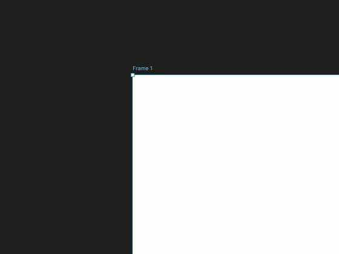
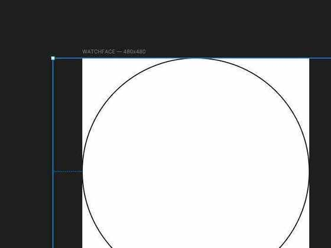
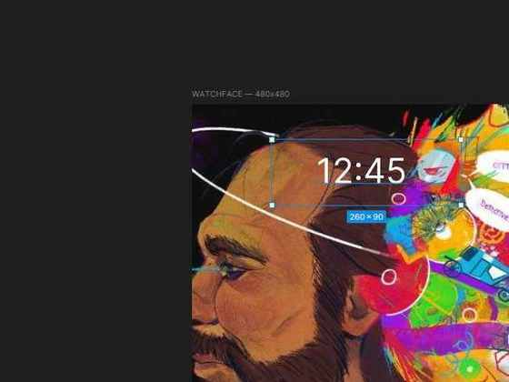
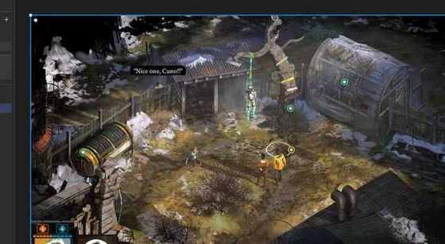
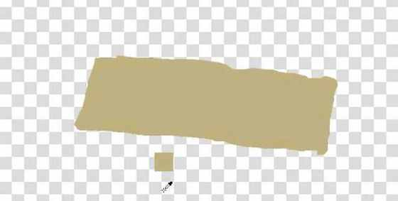
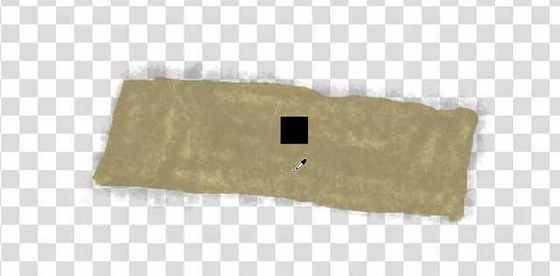
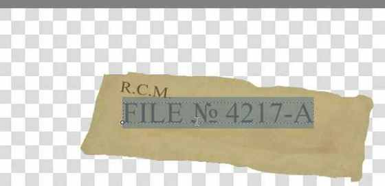

Циферблат Xiaomi Watch S5 в эстетике Disco Elysium
Визуальная концепция циферблата для Xiaomi Watch S5 / MM6. Задача — собрать выразительную композицию на квадратном макете 480 × 480 px, которая выдерживает круглую область отображения и не притворяется интерфейсом с несуществующими динамическими полями.
Визуальная композиция принята автором · тест на устройстве отдельно не задокументирован в приложенном архиве
Финальная композиция в Figma. Это кадр из редактора, а не фотография циферблата на реальных часах.
Сначала устройство, затем декор
Циферблат проектировался с учётом реального холста и круглой границы дисплея. Основная иллюстрация должна оставаться визуальным центром, а вспомогательные элементы — помогать иерархии, а не перегружать экран.
Круглый экран
Рабочее изображение квадратное, но по краям круглой области детали могут обрезаться. Поэтому круглая направляющая использовалась как постоянная проверка композиции.
Системные поля
Платформа предоставляет ограниченный набор динамических полей. Время и другие обновляемые сведения нельзя надёжно имитировать текстом, запечённым в фоновую картинку.
Читаемость в малом размере
Дополнительные подписи и маркеры должны сохранять контраст и не перекрывать значимые части портрета после круглой обрезки.
Восемь кадров вместо 160 скриншотов
Из визуального архива отобраны ключевые состояния, которые объясняют ход работы: создание холста, проверка обрезки, поиск расположения времени, работа с референсом и создание собственного элемента. Это выборка процесса, а не полный журнал всех микровариантов.

Размер холста зафиксирован до начала композиции, чтобы дальнейшие решения опирались на формат устройства.

Направляющая показывает, какие края изображения окажутся за пределами круглого дисплея.

Это экспериментальный вариант размещения, а не заявление о финальном наборе полей. Макет отделяет фон от системно управляемой информации.

Игровой кадр использовался как материал для исследования художественной подачи. Он не является самостоятельным макетом циферблата.

В Krita подготовлена отдельная форма, которую можно дорабатывать независимо от общей композиции Figma.

Тёмный след и ореол выходили за границу бумаги. Эффект пришлось ограничить формой и ослабить заметные мазки вместо того, чтобы сохранять дефект как декор.

Номер дела переносился из-за узкого текстового блока. Корректировка ширины и размера позволила собрать маркировку в более читаемую композицию.
Один выразительный материальный элемент
Разделение инструментов
Figma использовалась для компоновки, иерархии и проверки круглой обрезки. Krita — для растрового материала, фактуры и типографики отдельной метки. Экспортированный PNG с альфа-каналом возвращался в композицию.
Меньше декоративного шума
Вместо раннего универсального блока CASE NOTE появился один бумажный фрагмент с маркировкой R.C.M. / FILE № 4217-A. После достижения приемлемой читаемости дальнейшие украшения не считались обязательными.
Что получилось — и что не следует преувеличивать
- Сформирована визуальная композиция с доминирующим портретом, нижней служебной полосой и отдельной архивной меткой.
- Рабочая метка создана в Krita, экспортирована в PNG и интегрирована в Figma.
- По истории проекта автор принял текущую композицию и счёл читаемость и кадрирование приемлемыми.
- В предоставленном архиве нет отдельной фотографии циферблата на реальном экране часов. Поэтому эта страница показывает визуальное решение в Figma, а не независимо подтверждённый тест на устройстве.
- Проект не включает прошивку, разработку watchface-движка или доказательство работы с динамическими данными за пределами возможностей редактора циферблатов.
Статус: текущая визуальная композиция закрыта автором. Возобновлять работу имеет смысл при конкретной проблеме читаемости, кадрирования или ограничениях платформы, а не ради бесконечного добавления декора.
Что демонстрирует этот кейс
Инструменты и навыки
Figma · Krita 5.3.4 · композиция для круглого дисплея · информационная иерархия · растровая фактура · работа со слоями и прозрачным PNG · исправление типографики по результатам визуальной проверки.
Роль ИИ
ИИ использовался как консультативный инструмент для обсуждения дизайна и поиска способов исправить проблемы. Направление композиции, изменения в Figma/Krita и принятие итогового варианта оставались под управлением автора.
Авторские права и статус концепта
Это неофициальный фанатский дизайн-концепт, не связанный с разработчиками или правообладателями Disco Elysium. Использованная иллюстрация и игровые материалы не являются оригинальными активами автора кейса; права на них принадлежат соответствующим правообладателям. Для коммерческого продвижения или использования в качестве клиентского продукта этот кейс следует заменить вариантом с собственной или лицензированной графикой. Само указание правообладателя не заменяет разрешение на использование.